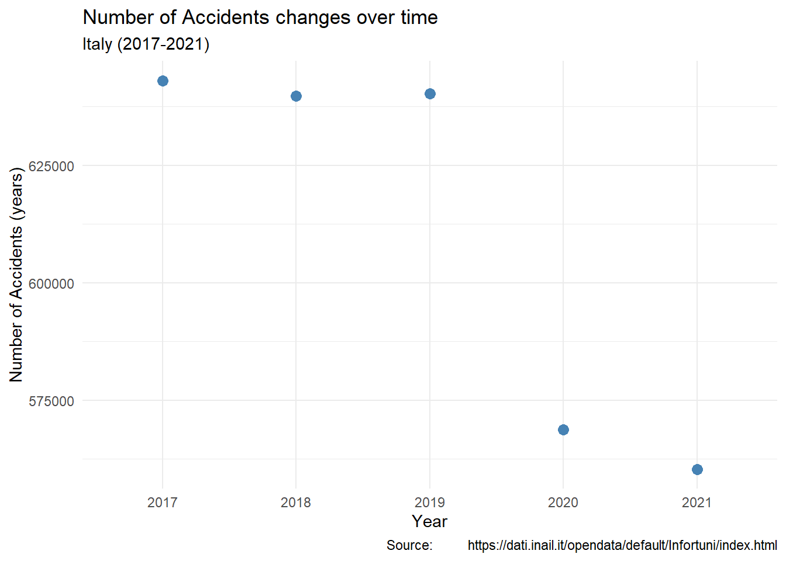
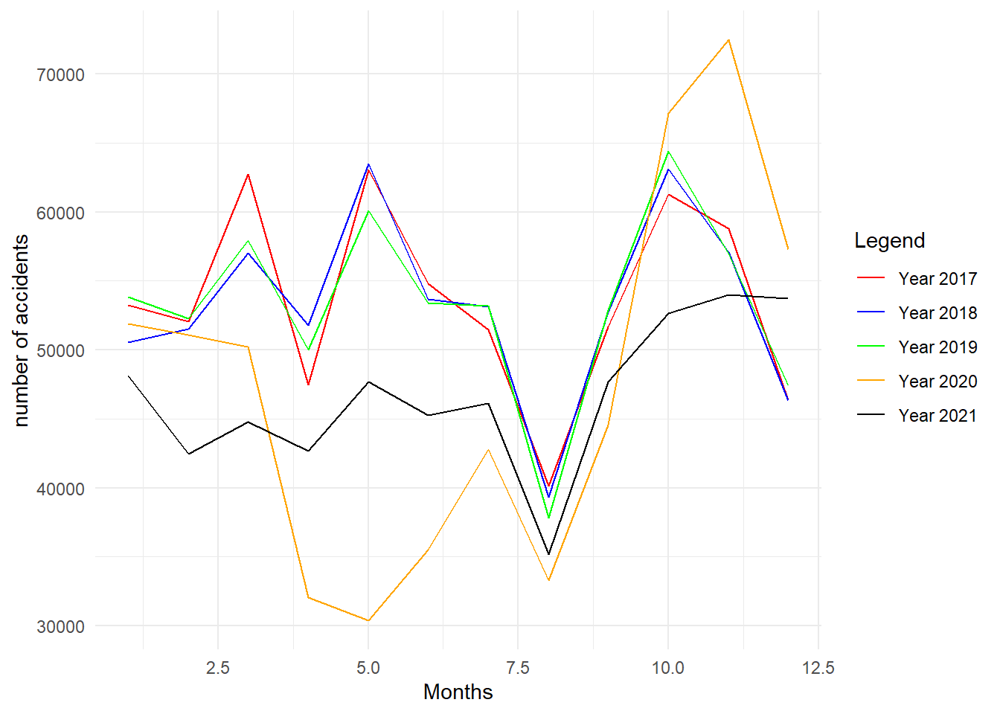
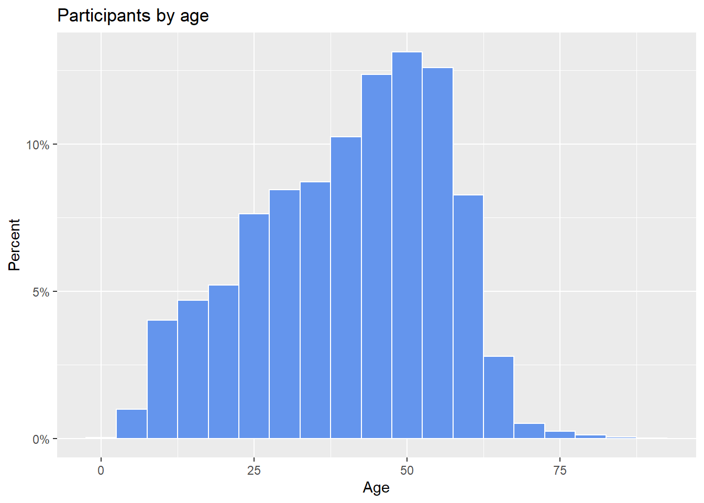
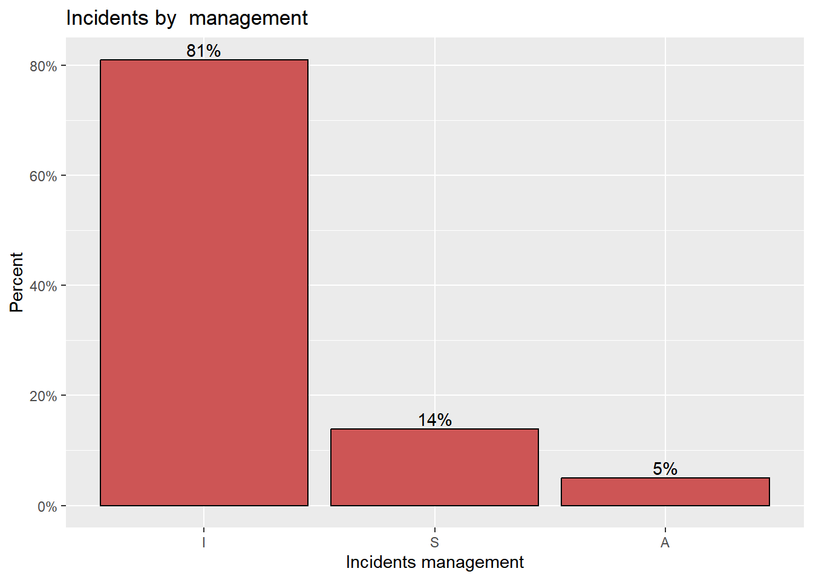
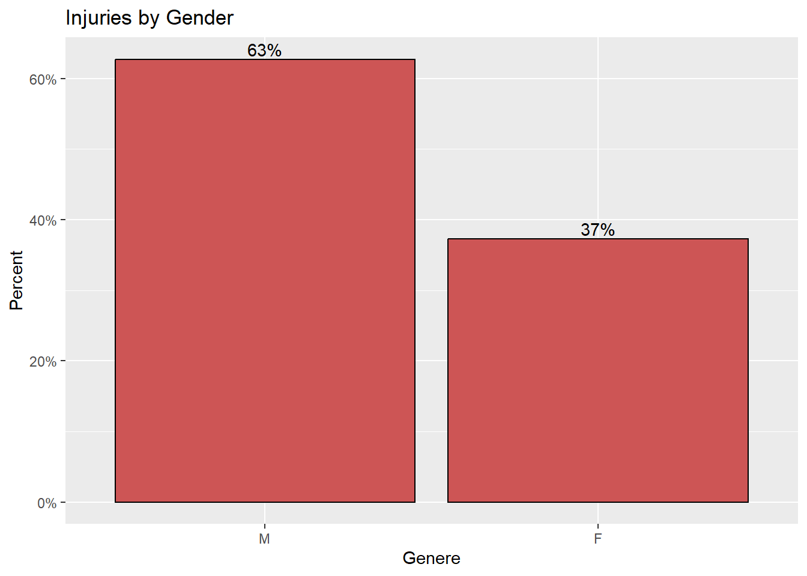

Code
library(accidentr)
library(ggplot2)
library(plotly)
library(dplyr)
library(scales)
library(tidyr)
library(treemapify)In this Report we are going to analyse the dataset accidents, which represents Six-monthly accident data across al Italy grouped by “region”, with respect to the place of occurrence, and it is downloaded from INAIL. The first step, we collect the data by region from INAIL website and merge the data into one dataset, the second step we create a package in R for the dataset (accidentr ). However, the dataset contains 25 variables and 3052056 observations, and variables can be grouped into 7 types as the following:
A - temporal location of the injury:
B - geographical location of the accident:
C - characteristics of the injured person:
date of occurrence, expressed in years of age;D - method of injury:
during work, in itinere);E - administrative characteristics of the injury:
positive or negative) or the exempt outcome or the preliminary investigation situation;positive or negative) or the situation in investigation;temporary, capital, direct annuity, survivors' annuity);F - medico-legal characteristics of the accident:
G - characteristics of the employer:
agriculture, industry and services, on behalf of the state;industry, crafts, tertiary, other activities;agricultural processing and food,chemical, paper and leather, construction and plant, energy and communications, wood and similar, metals and machinery;rock and glass mining,textiles and packaging, transport and warehouses,various activities).Required Libraries
library(accidentr)
library(ggplot2)
library(plotly)
library(dplyr)
library(scales)
library(tidyr)
library(treemapify)Load the data
data(Ita_Regions)overview of the data
str(Ita_Regions)'data.frame': 3052056 obs. of 25 variables:
$ DataRilevazione : chr "30/04/2022" "30/04/2022" "30/04/2022" "30/04/2022" ...
$ DataProtocollo : chr "11/06/2021" "04/02/2021" "26/09/2019" "11/10/2017" ...
$ DataAccadimento : chr "09/06/2021" "03/02/2021" "23/09/2019" "10/10/2017" ...
$ DataDefinizione : chr "31/01/2022" "14/02/2021" "01/01/1900" "11/10/2017" ...
$ DataMorte : chr "" "" "" "" ...
$ LuogoAccadimento : int 67 66 67 69 69 66 66 69 69 68 ...
$ IdentificativoInfortunato : int 33187926 10447851 4933280 10449679 13961119 19504939 1036005 33187410 33187412 1036919 ...
$ Genere : chr "M" "F" "M" "M" ...
$ Eta : int 33 43 40 37 53 52 48 29 47 50 ...
$ LuogoNascita : chr "ITAL" "ITAL" "ITAL" "ITAL" ...
$ ModalitaAccadimento : chr "S" "N" "N" "N" ...
$ ConSenzaMezzoTrasporto : chr "S" "N" "N" "N" ...
$ IdentificativoCaso : int 23650525 23439310 22509823 20993425 21379343 22530195 21616970 23638357 23638358 22003870 ...
$ DefinizioneAmministrativa : chr "P" "P" "I" "F" ...
$ DefinizioneAmministrativaEsitoMortale: chr "ND" "ND" "ND" "ND" ...
$ Indennizzo : chr "CA" "TE" "NE" "NE" ...
$ DecisioneIstruttoriaEsitoMortale : chr "ND" "ND" "ND" "ND" ...
$ GradoMenomazione : int 8 -1 -1 -1 -1 -1 -1 2 -1 -1 ...
$ GiorniIndennizzati : int 212 6 0 0 70 0 26 61 2 27 ...
$ IdentificativoDatoreLavoro : int 3460730 5826271 3572561 3851335 4438309 -1 6482147 4000839 9632626 9602830 ...
$ PosizioneAssicurativaTerritoriale : int 4387645 3456736 2293098 2356113 4349472 -1 7971583 10155524 11989960 12889950 ...
$ SettoreAttivitaEconomica : chr "M 70" "H 53" "C 25" "C 25" ...
$ Gestione : chr "I" "I" "I" "I" ...
$ GestioneTariffaria : chr "3" "4" "1" "1" ...
$ GrandeGruppoTariffario : chr "0" "0" "6" "6" ...Check for missing values
sapply(Ita_Regions, function(x) sum(is.na(x))) DataRilevazione DataProtocollo
0 0
DataAccadimento DataDefinizione
0 0
DataMorte LuogoAccadimento
0 0
IdentificativoInfortunato Genere
0 0
Eta LuogoNascita
0 0
ModalitaAccadimento ConSenzaMezzoTrasporto
0 0
IdentificativoCaso DefinizioneAmministrativa
0 0
DefinizioneAmministrativaEsitoMortale Indennizzo
0 0
DecisioneIstruttoriaEsitoMortale GradoMenomazione
0 0
GiorniIndennizzati IdentificativoDatoreLavoro
0 0
PosizioneAssicurativaTerritoriale SettoreAttivitaEconomica
0 0
Gestione GestioneTariffaria
0 0
GrandeGruppoTariffario
0 Check for unique values in every columns
sapply(Ita_Regions, function(x) length(unique(x))) DataRilevazione DataProtocollo
1 1926
DataAccadimento DataDefinizione
1826 1945
DataMorte LuogoAccadimento
1709 107
IdentificativoInfortunato Genere
2595199 2
Eta LuogoNascita
91 233
ModalitaAccadimento ConSenzaMezzoTrasporto
2 2
IdentificativoCaso DefinizioneAmministrativa
3052056 4
DefinizioneAmministrativaEsitoMortale Indennizzo
4 5
DecisioneIstruttoriaEsitoMortale GradoMenomazione
12 99
GiorniIndennizzati IdentificativoDatoreLavoro
1043 455822
PosizioneAssicurativaTerritoriale SettoreAttivitaEconomica
522398 88
Gestione GestioneTariffaria
3 5
GrandeGruppoTariffario
11 Extract the number of accidents everyday
dataACC <- Ita_Regions %>%
count(DataAccadimento) %>%
#summarise(n = sum(n)) %>%
#mutate(dat = as.Date(DataAccadimento, format = "%m/%d/%Y"))
group_by(DataAccadimento)
#dataACCExreact the day, month and year
data2 <- dataACC
data2$Date_Time <- strptime(data2$DataAccadimento, format = "%d/%m/%Y")
data2$Day <- format(data2$Date_Time, "%d")
data2$Month <- format(data2$Date_Time, "%m")
data2$NameMonth <- format(data2$Date_Time, "%b")
data2$Year <- format(data2$Date_Time, "%Y")aggregate number of accidents by year
mydata_total <- data2 %>%
group_by(Year) %>%
summarise(total = sum(n))
mydata_total# A tibble: 5 x 2
Year total
<chr> <int>
1 2017 643068
2 2018 639732
3 2019 640249
4 2020 568681
5 2021 560326ggplot(mydata_total,
aes(x = Year,
y = total)) +
geom_line(size = 1.5,
color = "lightgrey") +
geom_point(size = 3,
color = "steelblue") +
theme_minimal() +
labs(y = "Number of Accidents (years)",
x = "Year",
title = "Number of Accidents changes over time",
subtitle = "Italy (2017-2021)",
caption = "Source: https://dati.inail.it/opendata/default/Infortuni/index.html")geom_path: Each group consists of only one observation. Do you need to adjust
the group aesthetic?
From the graph we can tell that, 2017 has the highest rate of accidents while 2021 has the lowest rate of accidents. However, the frequency of accidents has decreased dramatically in 2020 and 2021 from the past years and this is quit reasonable due to the pandemic (Covid 19).
Aggregate number of accidents by month spread across the years
mydata <- data2 %>%
group_by(Year, Month, NameMonth) %>%
summarise(total = sum(n)) %>%
spread(key = "Year", value = total) %>%
as.data.frame()`summarise()` has grouped output by 'Year', 'Month'. You can override using the
`.groups` argument.mydata Month NameMonth 2017 2018 2019 2020 2021
1 01 Jan 53258 50569 53825 51899 48111
2 02 Feb 52040 51532 52264 51077 42470
3 03 Mar 62724 57007 57926 50232 44772
4 04 Apr 47456 51765 50018 32046 42680
5 05 May 63075 63475 60091 30358 47712
6 06 Jun 54823 53668 53423 35486 45239
7 07 Jul 51436 53110 53175 42785 46122
8 08 Aug 40138 39355 37843 33300 35152
9 09 Sep 51698 52767 52877 44544 47683
10 10 Oct 61259 63083 64412 67168 52659
11 11 Nov 58799 57081 56953 72483 53978
12 12 Dec 46362 46320 47442 57303 53748colnames(mydata) <- c("Month", "NameMonth", "Year2017", "Year2018", "Year2019",
"Year2020", "Year2021")
write.csv(mydata, "df.csv")
df <- read.csv("df.csv")colors = c("Year 2017" ="red","Year 2018"= "blue",
"Year 2019" ="green","Year 2020"= "orange","Year 2021" = "black")
ggplot(df, aes(x = Month)) +
geom_line(aes(y = Year2017, color = "Year 2017"), size = 0.5) +
geom_line(aes(y = Year2018, color = "Year 2018"), size = 0.5) +
geom_line(aes(y = Year2019, color = "Year 2019"), size = 0.5) +
geom_line(aes(y = Year2020, color = "Year 2020"), size = 0.5) +
geom_line(aes(y = Year2021, color = "Year 2021"), size = 0.5) +
labs(x = "Months",
y = "number of accidents",
color = "Legend") +
scale_color_manual(values = colors) +
xlim(1,12) +
theme_minimal()
From the graph we can see that, the number of accidents around summer is always lower with respect to other seasons. However, after summer there is a dramatic increase in the number of accidents across Italy. Furthermore, we noticed as well there are three peeks in the year except for the year 2020, the peeks are around March, May and October. Considering the years of the pandemic, in March of 2020 the number of accidents declined sharply and hit the lowest value in May 2020 and in the same year the number of accidents hits the peek around November and this is the highest number of accidents recorded with respect to the other years.
The number of accidents occurring to male is about double the number of accident for females, and this result is reasonable because most of the desirous job are performed by male.
Gender <- Ita_Regions %>%
count(Genere) %>%
mutate(pct = n / sum(n),
pctlabel = paste0(round(pct*100), "%"))
# plot the bars as percentages,
# in decending order with bar labels
ggplot(Gender,
aes(x = reorder(Genere, -pct),
y = pct)) +
geom_bar(stat = "identity",
fill = "indianred3",
color = "black") +
geom_text(aes(label = pctlabel),
vjust = -0.25) +
scale_y_continuous(labels = percent) +
labs(x = "Genere",
y = "Percent",
title = "Participants by Genere")
ggplot(Ita_Regions,
aes(x = Eta,
fill = Genere)) +
geom_density(alpha = 0.4) +
labs(title = "Age distribution by Gender") +
theme_minimal()
From the figure above, we can see that accidents among female workers is at the hihgest rate around the ages 30, 40 and 50, while the age with most frequent accidents among male workers is around the ages 40, 50 and 60. However, at ages from 20 -30 the frequency of accidents for the female workers is higher than male, while at the ages lower than 20 the accidents rate is higher among male workers with respect to female workers. For ages greater than 40 till 60 the accidents is higher for male compared to female.
From the graph below we can see that, the first bin I which represents employees in the industry and services sectors and they have the highest proportion of accidents 81% with respect to employees in the two other sectors, while employees in the agricultural sector A have the lowest rate of accidents, which is about 5% only. For the the employees who are working on behalf of the state S they have 14% of the accidents across Italy.
# create a pie chart with slice labels
gestione <- Ita_Regions %>%
count(Gestione) %>%
arrange(desc(Gestione)) %>%
mutate(prop = round(n*100/sum(n), 1),
lab.ypos = cumsum(prop) - 0.5*prop)
gestione$label <- paste0(gestione$Gestione, "\n",
round(gestione$prop), "%")
ggplot(gestione,
aes(x = "",
y = prop,
fill = Gestione)) +
geom_bar(width = 1,
stat = "identity",
color = "black") +
geom_text(aes(y = lab.ypos, label = label),
color = "black") +
coord_polar("y",
start = 0,
direction = -1) +
theme_void() +
theme(legend.position = "FALSE") +
labs(title = "Participants by Gestione")
Looking at the figure below, The highest rate of accidents are coming from Non-Defined tariff management. However, 25% of the accidents are registered by tertiary sector, industrial sector contributes by 22% of the total accidents, handcraft activities have a rate of 12% and the least contributing sector is other activities with only 9% of the total accidents.
G_Tariffaria <- Ita_Regions %>%
count(GestioneTariffaria) %>%
mutate(pct = n / sum(n),
pctlabel = paste0(round(pct*100), "%"))
# plot the bars as percentages,
# in decending order with bar labels
ggplot(G_Tariffaria,
aes(x = reorder(GestioneTariffaria, -pct),
y = pct)) +
geom_bar(stat = "identity",
fill = "indianred3",
color = "black") +
geom_text(aes(label = pctlabel),
vjust = -0.25) +
scale_y_continuous(labels = percent) +
labs(x = "GestioneTariffaria",
y = "Percent",
title = "Participants by GestioneTariffaria")Grande_Tariffaria <- Ita_Regions %>%
count(GrandeGruppoTariffario) %>%
mutate(pct = n / sum(n),
pctlabel = paste0(round(pct*100), "%"))
# plot the bars as percentages,
# in decending order with bar labels
ggplot(Grande_Tariffaria,
aes(x = reorder(GrandeGruppoTariffario, -pct),
y = pct)) +
geom_bar(stat = "identity",
fill = "indianred3",
color = "black") +
geom_text(aes(label = pctlabel),
vjust = -0.25) +
scale_y_continuous(labels = percent) +
labs(x = "GrandeGruppoTariffario",
y = "Percent",
title = "Participants by GrandeGruppoTariffario")
From the above graph, agricultural processing and food and Non-Defined sector they contribute by the same proportion of accidents which is 36% fro each while wood and similar zero percent of accidents, furthermore the rate of accidents for metals and machinery, rock and glass mining and textiles and packaging only 1% for each sector.
# create a treemap with tile labels
plotdata <- Ita_Regions %>%
count(SettoreAttivitaEconomica)
ggplot(plotdata,
aes(fill = SettoreAttivitaEconomica,
area = n,
label = SettoreAttivitaEconomica)) +
geom_treemap() +
geom_treemap_text(colour = "white",
place = "centre") +
labs(title = "Accidents by economical sector ativity") +
theme(legend.position = "none")